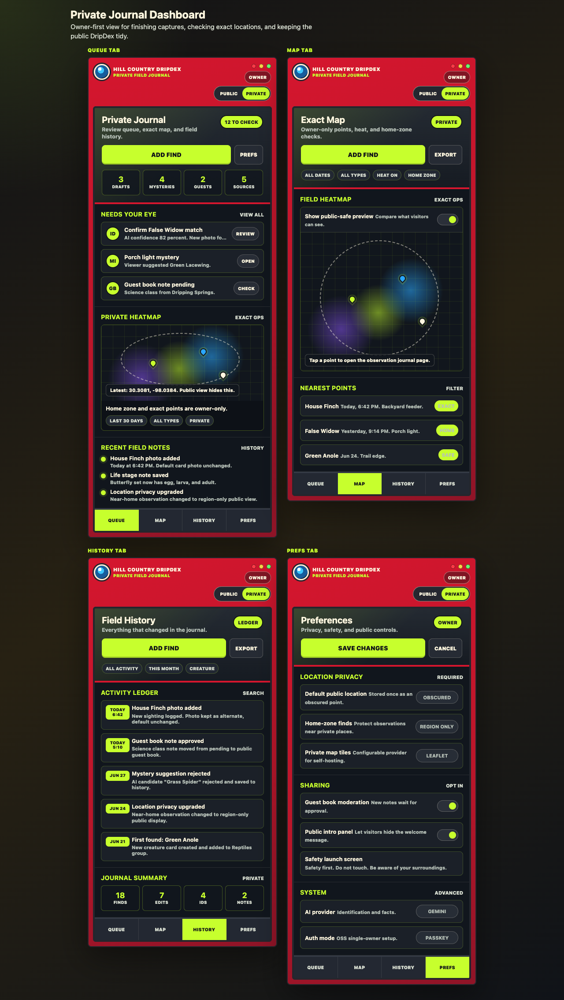
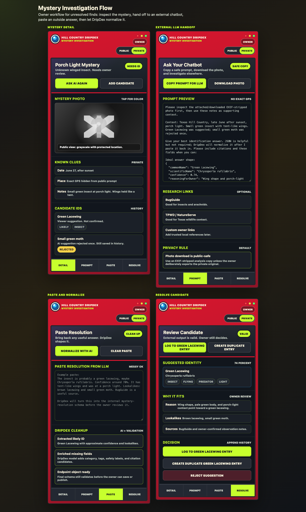

Public derivatives only
Public web images should be EXIF-stripped derivatives. Private originals may contain sensitive context and should stay owner-only.
Privacy first
DripDex should invite families outside without exposing home, school, or sensitive-species locations.
Public web images should be EXIF-stripped derivatives. Private originals may contain sensitive context and should stay owner-only.
Exact coordinates are intended for the owner. Public views should use generalized labels or stored obscured locations.
Guestbook notes, visitor suggestions, and AI identifications should wait for owner approval before affecting public content.
Location rules
Repeated observations from home, school, nests, dens, roosts, or rare species can reveal more than one post alone. The product direction is to store public-safe locations once and keep exact points private.
Observations near private places should use stronger public generalization, such as county or region labels rather than small near-town hints.
Sensitive species, nests, dens, roosts, burrows, and home-zone observations should not be downgraded below the required privacy rule.
Field safety
DripDex can be playful without encouraging kids to touch, eat, or collect unknown organisms.
Owner-only dashboard
Dashboard concepts can include exact maps, owner notes, history, and preferences. Those views are not public content.

